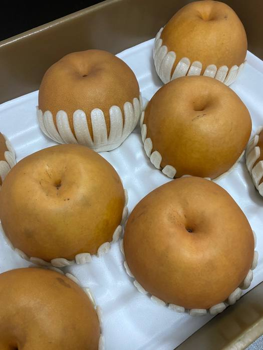

상품 담기
공급사 상품을 살펴보고
판매할 상품과 옵션 선택
공급사 상품 선택부터 AI 상품명·상세페이지 준비,
여러 마켓 등록과 주문·발주 관리까지.
매일 반복되는 판매 업무를 한곳에서 이어가세요.
3kg · 5kg 옵션
상품 사진·상세페이지 연결예시 화면입니다. 실제 상품은 등록되지 않습니다.
여러 화면을 오가며 하던 일들을
하나의 흐름으로 이어갑니다.
공급사 상품을 살펴보고
판매할 상품과 옵션 선택
AI 상품명과 카테고리,
사진·상세페이지 준비
연결한 마켓에 맞춰
상품 등록과 결과 확인
주문을 모아 확인하고
공급사 발주·배송까지 연결
공급사 상품과 운영 중인 스토어의 유사 상품을 함께 살펴보세요. 원하는 옵션을 담으면 AI 상품명부터 사진·상세페이지 준비까지 이어집니다.
3kg · 5kg 옵션
상세페이지 연결나주 배 선물세트 3kg 5kg
여러 마켓의 주문을 모아 확인하고, 연결된 공급사 상품과 옵션으로 발주를 이어갑니다. 공급사 송장도 주문이 들어온 마켓으로 연결합니다.
공급사 상품·옵션 연결
새 주문을 모아 확인
처리 결과 함께 확인
등록되지 않은 상품을 찾느라 헤매지 마세요. 상품과 보류 사유를 함께 확인하고, 필요한 자료를 보완한 뒤 다시 등록을 시도할 수 있습니다.
공급사 사진과 상세페이지 연결을 확인하고, 필요한 자료를 보완해 주세요.
텔레그램 알림에서 상품과 사유 확인

공급사 상품 사진연결된 공급사 사진과 완성 상세페이지를 활용하세요. 새 상세페이지가 필요한 상품은 AI 제작 기능으로 준비하고, 공통 안내 이미지를 함께 구성할 수 있습니다.
공급사 자료 활용연결된 사진과 상세페이지로 준비
AI 상세페이지 제작상품 정보와 참고 문구로 글 작성
공통 안내 이미지상·하단 고정 이미지 함께 구성
상품 등록 · 주문 관리
상품 등록 · 주문 관리
상품 등록 · 주문 관리
마켓·공급사별 지원 기능과 연동 조건은 이용 전 확인해 주세요.
운영 중인 스토어에 맞는 방식으로
연결하고 시작할 수 있도록.
공급사 상품 선택과 AI 등록 준비부터 여러 마켓의 상품·주문·발주 관리까지 이어주는 판매 업무 서비스입니다. 현재 농수산물 공급사 연동과 판매 운영을 바탕으로 준비하고 있습니다.
현재 안내하는 마켓은 쿠팡, 롯데ON, 11번가입니다. 각 마켓의 판매자 계정과 연동 조건이 필요하며, 마켓마다 지원하는 기능이 다를 수 있습니다.
고른 상품과 옵션으로 등록을 준비하고, 등록 결과를 확인합니다. 상품 자료나 마켓 검수가 필요한 경우에는 보류·검수 상태를 확인하고 필요한 내용을 보완해야 합니다.
서버에서 처리하는 업무와 PC 작업기로 처리하는 AI 업무를 구분합니다. PC 작업기 이용 여부에 따라 실행 조건이 달라지므로, 이용할 기능에 맞춰 안내해 드립니다.
이용 요금과 가입 안내는 문의를 통해 확인해 주세요. 운영 중인 마켓과 이용할 공급사를 함께 알려주시면 필요한 연동 범위를 확인하는 데 도움이 됩니다.
상품을 담는 순간부터 주문을 처리하는 순간까지.
링클하우스로 이어가세요.